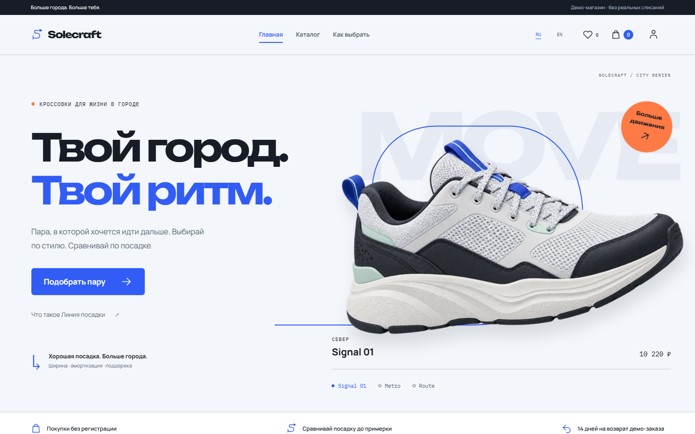
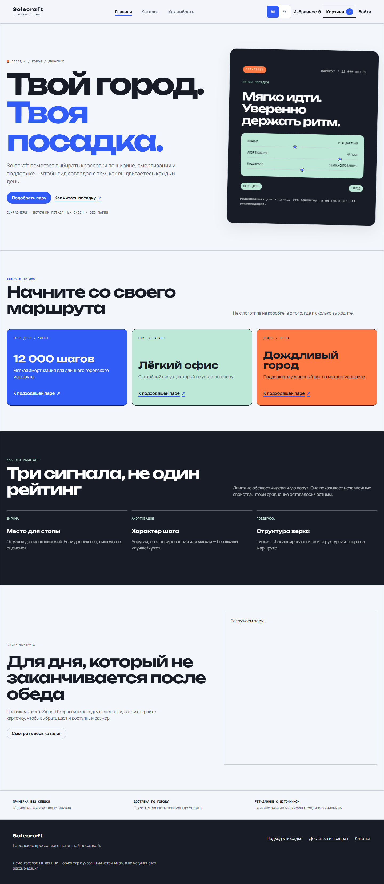

Solecraft / M10 / 17.10.2026
До. После. В своём ритме.
Тот же работающий магазин: реальные варианты, размеры, избранное и гостевой заказ. Новая композиция, предметная подача обуви и цельный визуальный язык.


ДОПОСЛЕ
Снимки реального локального сайта. Первый экран приведён к одинаковому viewport. Сравнение мобильного каталога и PDP доступно через итоговые screenshots; исходные mobile-снимки этих двух страниц в задаче не снимались.